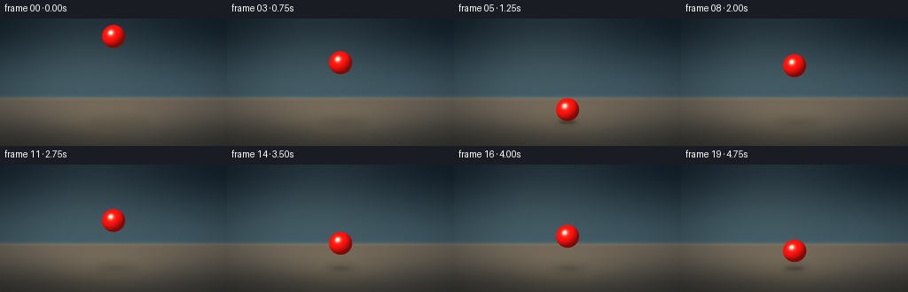
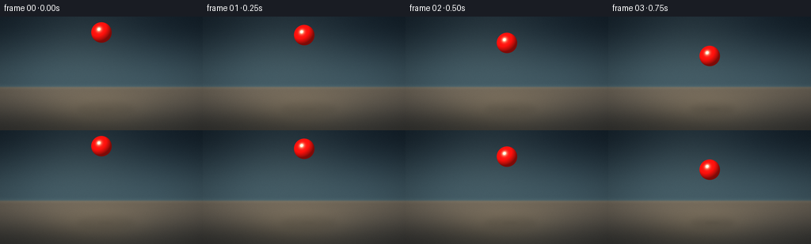

CODING AGENTS AS PIXEL WORLD MODELS
traex/DeepSeek-V4.1-Flash · instance_preservation_0023
点击播放 · 原生 RGB 像素
逐轮保存的候选
回放视频、检查图与代码变化。
每份候选均可单独播放。实际图片检查记录在下方工具轨迹中。
候选 01播放与检查图
点击播放 · 原生 RGB 像素


展开代码变化
--- 上一保存版本
+++ 本次保存版本
@@ -0,0 +1,295 @@
+from pathlib import Path
+
+import numpy as np
+from PIL import Image, ImageDraw, ImageFilter
+
+import artifact_io
+
+
+WIDTH = 256
+HEIGHT = 144
+FPS = 4
+FRAME_COUNT = 20
+SUPERSAMPLE = 4
+
+
+def smoothstep(edge0, edge1, values):
+ x = np.clip((values - edge0) / (edge1 - edge0), 0.0, 1.0)
+ return x * x * (3.0 - 2.0 * x)
+
+
+def normalize(vector):
+ vector = np.asarray(vector, dtype=np.float32)
+ return vector / np.linalg.norm(vector)
+
+
+def make_background():
+ width = WIDTH * SUPERSAMPLE
+ height = HEIGHT * SUPERSAMPLE
+ y, x = np.mgrid[0:height, 0:width].astype(np.float32)
+ u = (x - width * 0.5) / (width * 0.5)
+ v = y / float(height)
+ horizon = 89.0 * SUPERSAMPLE
+
+ wall_t = np.clip(y / horizon, 0.0, 1.0)
+ wall_t = wall_t * wall_t * (3.0 - 2.0 * wall_t)
+ wall_top = np.array([0.075, 0.125, 0.165], dtype=np.float32)
+ wall_bottom = np.array([0.235, 0.325, 0.365], dtype=np.float32)
+ wall = wall_top + (wall_bottom - wall_top) * wall_t[..., None]
+
+ light_pool = np.exp(-(((x - width * 0.40) / (width * 0.34)) ** 2
+ + ((y - height * 0.18) / (height * 0.44)) ** 2))
+ wall += light_pool[..., None] * np.array([0.070, 0.078, 0.070], dtype=np.float32)
+
+ floor_t = np.clip((y - horizon) / (height - horizon), 0.0, 1.0)
+ floor_t = floor_t * floor_t * (3.0 - 2.0 * floor_t)
+ floor_near = np.array([0.205, 0.205, 0.195], dtype=np.float32)
+ floor_far = np.array([0.395, 0.365, 0.320], dtype=np.float32)
+ floor = floor_far + (floor_near - floor_far) * floor_t[..., None]
+
+ floor_glow = np.exp(-(((x - width * 0.47) / (width * 0.31)) ** 2
+ + ((y - height * 0.80) / (height * 0.20)) ** 2))
+ floor += floor_glow[..., None] * np.array([0.095, 0.075, 0.045], dtype=np.float32)
+
+ floor_wave = 0.010 * np.sin(y * 0.018 + np.sin(x * 0.006) * 0.7)
+ floor += floor_wave[..., None]
+
+ floor_mask = smoothstep(horizon - 1.5 * SUPERSAMPLE,
+ horizon + 1.5 * SUPERSAMPLE, y)
+ image = wall * (1.0 - floor_mask[..., None]) + floor * floor_mask[..., None]
+
+ horizon_glow = np.exp(-((y - horizon) / (2.8 * SUPERSAMPLE)) ** 2)
+ image += horizon_glow[..., None] * np.array([0.035, 0.040, 0.034], dtype=np.float32)
+
+ vignette = 1.0 - 0.20 * smoothstep(0.35, 1.25, np.sqrt((u * 0.82) ** 2 + (v - 0.48) ** 2))
+ image *= vignette[..., None]
+
+ rng = np.random.default_rng(23)
+ grain = rng.normal(0.0, 0.0065, (height, width, 1)).astype(np.float32)
+ image += grain
+ return np.clip(image, 0.0, 1.0)
+
+
+def trajectory(time_seconds):
+ """Return ball center and impact phase for a three-bounce sequence."""
+ ground_y = 116.0
+ radius = 13.2
+ rest_y = ground_y - radius
+ start_y = 20.0
+ gravity = 2.0 * (rest_y - start_y) / (1.25 ** 2)
+
+ first_impact = 1.25
+ if time_seconds <= first_impact:
+ y = start_y + 0.5 * gravity * time_seconds ** 2
+ return y, 0.0, 0.0
+
+ first_speed = gravity * first_impact
+ second_speed = first_speed * 0.80
+ second_impact = first_impact + 2.0 * second_speed / gravity
+ if time_seconds <= second_impact:
+ dt = time_seconds - first_impact
+ y = rest_y - second_speed * dt + 0.5 * gravity * dt ** 2
+ squash = np.exp(-((dt - 0.03) / 0.12) ** 2)
+ return y, float(squash), 1.0
+
+ third_speed = second_speed * 0.65
+ third_impact = second_impact + 2.0 * third_speed / gravity
+ if time_seconds <= third_impact:
+ dt = time_seconds - second_impact
+ y = rest_y - third_speed * dt + 0.5 * gravity * dt ** 2
+ squash = np.exp(-((dt - 0.03) / 0.12) ** 2)
+ return y, float(squash), 2.0
+
+ fourth_speed = third_speed * 0.55
+ dt = time_seconds - third_impact
+ y = rest_y - fourth_speed * dt + 0.5 * gravity * dt ** 2
+ squash = np.exp(-((dt - 0.03) / 0.12) ** 2)
+ return y, float(squash), 3.0
+
+
+def add_floor_shadow(image, ball_y, squash):
+ height, width = image.shape[:2]
+ ground_y = 116.0 * SUPERSAMPLE
+ radius = 13.2
+ gap = max(0.0, ground_y - (ball_y + radius * (1.0 - 0.20 * squash)) * SUPERSAMPLE)
+ shadow_width = (radius * 2.05 + gap / SUPERSAMPLE * 0.55) * SUPERSAMPLE
+ shadow_height = (radius * 0.48 + gap / SUPERSAMPLE * 0.14) * SUPERSAMPLE
+ center_x = 128.0 * SUPERSAMPLE + gap * 0.07
+ center_y = ground_y + 1.2 * SUPERSAMPLE
+
+ soft_layer = Image.new("L", (width, height), 0)
+ soft_draw = ImageDraw.Draw(soft_layer)
+ soft_draw.ellipse(
+ [
+ center_x - shadow_width * 0.5,
+ center_y - shadow_height * 0.5,
+ center_x + shadow_width * 0.5,
+ center_y + shadow_height * 0.5,
+ ],
+ fill=120,
+ )
+ soft_layer = soft_layer.filter(ImageFilter.GaussianBlur(radius=3.3 * SUPERSAMPLE))
+ soft_alpha = np.asarray(soft_layer, dtype=np.float32)[..., None] / 255.0
+ soft_alpha *= (0.40 / (1.0 + gap / (46.0 * SUPERSAMPLE)))
+ shadow_color = np.array([0.045, 0.055, 0.052], dtype=np.float32)
+ image *= 1.0 - soft_alpha
+ image += soft_alpha * shadow_color
+
+ contact_layer = Image.new("L", (width, height), 0)
+ contact_draw = ImageDraw.Draw(contact_layer)
+ contact_width = radius * (1.45 + 0.45 * squash) * SUPERSAMPLE
+ contact_height = radius * (0.22 + 0.12 * squash) * SUPERSAMPLE
+ contact_draw.ellipse(
+ [
+ center_x - contact_width * 0.5,
+ center_y - contact_height * 0.5,
+ center_x + contact_width * 0.5,
+ center_y + contact_height * 0.5,
+ ],
+ fill=170,
+ )
+ contact_layer = contact_layer.filter(ImageFilter.GaussianBlur(radius=1.25 * SUPERSAMPLE))
+ contact_alpha = np.asarray(contact_layer, dtype=np.float32)[..., None] / 255.0
+ contact_alpha *= 0.52 / (1.0 + gap / (9.0 * SUPERSAMPLE))
+ image *= 1.0 - contact_alpha
+ image += contact_alpha * np.array([0.025, 0.032, 0.031], dtype=np.float32)
+ return image
+
+
+def add_impact_ring(image, impact_index, squash):
+ if impact_index <= 0.0 or squash < 0.05:
+ return image
+ height, width = image.shape[:2]
+ layer = Image.new("L", (width, height), 0)
+ draw = ImageDraw.Draw(layer)
+ center_x = 128.0 * SUPERSAMPLE
+ center_y = 116.0 * SUPERSAMPLE
+ ring_width = (26.0 + 7.0 * squash) * SUPERSAMPLE
+ ring_height = (3.5 + 1.5 * squash) * SUPERSAMPLE
+ draw.ellipse(
+ [
+ center_x - ring_width * 0.5,
+ center_y - ring_height * 0.5,
+ center_x + ring_width * 0.5,
+ center_y + ring_height * 0.5,
+ ],
+ outline=90,
+ width=max(1, int(0.7 * SUPERSAMPLE)),
+ )
+ layer = layer.filter(ImageFilter.GaussianBlur(radius=1.8 * SUPERSAMPLE))
+ alpha = np.asarray(layer, dtype=np.float32)[..., None] / 255.0
+ alpha *= 0.09 * squash
+ image *= 1.0 - alpha
+ image += alpha * np.array([0.50, 0.42, 0.30], dtype=np.float32)
+ return image
+
+
+def add_ball(image, center_x, center_y, squash):
+ height, width = image.shape[:2]
+ radius = 13.2 * SUPERSAMPLE
+ radius_x = radius * (1.0 + 0.12 * squash)
+ radius_y = radius * (1.0 - 0.20 * squash)
+ center_x = center_x * SUPERSAMPLE
+ center_y = center_y * SUPERSAMPLE
+
+ x0 = max(0, int(np.floor(center_x - radius_x - 2)))
+ x1 = min(width, int(np.ceil(center_x + radius_x + 2)))
+ y0 = max(0, int(np.floor(center_y - radius_y - 2)))
+ y1 = min(height, int(np.ceil(center_y + radius_y + 2)))
+ yy, xx = np.mgrid[y0:y1, x0:x1].astype(np.float32)
+ qx = (xx - center_x) / radius_x
+ qy = (yy - center_y) / radius_y
+ q = np.sqrt(qx * qx + qy * qy)
+ edge_width = 1.8 / radius
+ alpha = np.clip((1.0 - q) / edge_width, 0.0, 1.0)
+ inside = q < 1.0
+
+ qz = np.sqrt(np.clip(1.0 - qx * qx - qy * qy, 0.0, 1.0))
+ normal = np.stack((qx / radius_x, qy / radius_y, qz / (radius * 0.94)), axis=-1)
+ normal /= np.maximum(np.linalg.norm(normal, axis=-1, keepdims=True), 1e-6)
+
+ light = normalize((-0.48, -0.62, 0.78))
+ view = np.array([0.0, 0.0, 1.0], dtype=np.float32)
+ half_vector = normalize(light + view)
+ diffuse = np.clip(np.sum(normal * light, axis=-1), 0.0, 1.0)
+ fill = np.clip(np.sum(normal * normalize((0.70, -0.08, 0.71))), 0.0, 1.0)
+ bounce = np.clip(np.sum(normal * normalize((0.08, 0.88, 0.46))), 0.0, 1.0)
+ specular = np.clip(np.sum(normal * half_vector, axis=-1), 0.0, 1.0) ** 28.0
+ sharp_specular = np.clip(np.sum(normal * half_vector, axis=-1), 0.0, 1.0) ** 105.0
+ rim = np.clip(1.0 - normal[..., 2], 0.0, 1.0) ** 2.5
+
+ red = np.array([0.88, 0.035, 0.028], dtype=np.float32)
+ deep_red = np.array([0.24, 0.008, 0.008], dtype=np.float32)
+ warm_fill = np.array([0.32, 0.095, 0.055], dtype=np.float32)
+ color = deep_red + red * (0.20 + 0.95 * diffuse)[..., None]
+ color += warm_fill * (0.20 * fill + 0.11 * bounce)[..., None]
+ color += np.array([1.0, 0.82, 0.66], dtype=np.float32) * (0.90 * specular)[..., None]
+ color += np.array([1.0, 0.96, 0.88], dtype=np.float32) * (0.72 * sharp_specular)[..., None]
+ color += np.array([0.58, 0.10, 0.075], dtype=np.float32) * (0.18 * rim)[..., None]
+ color *= (0.83 + 0.17 * np.clip(qz, 0.0, 1.0))[..., None]
+
+ region = image[y0:y1, x0:x1]
+ ball_alpha = (alpha * inside.astype(np.float32))[..., None]
+ region *= 1.0 - ball_alpha
+ region += np.clip(color, 0.0, 1.0) * ball_alpha
+ image[y0:y1, x0:x1] = region
+ return image
+
+
+def add_motion_accent(image, center_x, center_y, velocity, squash):
+ if abs(velocity) < 50.0 or squash > 0.02:
+ return image
+ height, width = image.shape[:2]
+ layer = Image.new("L", (width, height), 0)
+ draw = ImageDraw.Draw(layer)
+ x = center_x * SUPERSAMPLE
+ y = center_y * SUPERSAMPLE
+ direction = -1.0 if velocity > 0.0 else 1.0
+ length = min(9.0, abs(velocity) * 0.030) * SUPERSAMPLE
+ for index in range(4):
+ fraction = index / 3.0
+ yy = y + direction * length * (0.55 + fraction * 1.15)
+ rr = (4.2 - fraction * 1.8) * SUPERSAMPLE
+ draw.ellipse((x - rr, yy - rr * 1.8, x + rr, yy + rr * 1.8), fill=int(34 * (1.0 - fraction * 0.55)))
+ layer = layer.filter(ImageFilter.GaussianBlur(radius=1.4 * SUPERSAMPLE))
+ alpha = np.asarray(layer, dtype=np.float32)[..., None] / 255.0
+ image *= 1.0 - alpha * 0.25
+ image += alpha * np.array([0.55, 0.075, 0.055], dtype=np.float32)
+ return image
+
+
+def ball_velocity(time_seconds):
+ epsilon = 0.003
+ y0, _, _ = trajectory(max(0.0, time_seconds - epsilon))
+ y1, _, _ = trajectory(time_seconds + epsilon)
+ return (y1 - y0) / (epsilon + min(epsilon, time_seconds))
+
+
+def render_frame(frame_index):
+ time_seconds = frame_index / FPS
+ image = make_background()
+ ball_y, squash, impact_index = trajectory(time_seconds)
+ radius = 13.2
+ squash_radius_y = radius * (1.0 - 0.20 * squash)
+ center_y = ball_y + (radius - squash_radius_y) * squash
+
+ image = add_floor_shadow(image, center_y, squash)
+ image = add_impact_ring(image, impact_index, squash)
+ velocity = ball_velocity(time_seconds)
+ image = add_motion_accent(image, 128.0, center_y, velocity, squash)
+ image = add_ball(image, 128.0, center_y, squash)
+
+ small_height, small_width = HEIGHT, WIDTH
+ output = Image.fromarray(np.round(np.clip(image, 0.0, 1.0) * 255.0).astype(np.uint8))
+ output = output.resize((small_width, small_height), Image.Resampling.LANCZOS)
+ return np.asarray(output, dtype=np.uint8)
+
+
+def main():
+ case_dir = Path(__file__).resolve().parent
+ frames = np.stack([render_frame(index) for index in range(FRAME_COUNT)], axis=0)
+ artifact_io.save(frames, case_dir)
+
+
+if __name__ == "__main__":
+ main()
可观测工具轨迹
实际执行的命令与返回图片。
命令 1exit 0
/bin/bash -c "pwd && rg --files -g 'prompt.txt' -g 'GENERATION_RULES.md' -g 'task_spec.json' -g '"'!node_modules'"' -g '"'!vendor'"'"
命令 2exit 0
/bin/bash -c "ls -la && find . -maxdepth 2 -type f -printf '%p\\n' | sort | head -200"
命令 3exit 0
/bin/bash -c 'git status --short --branch'
命令 4exit 0
/bin/bash -c 'cat prompt.txt'
命令 5exit 0
/bin/bash -c 'cat GENERATION_RULES.md'
命令 6exit 0
/bin/bash -c 'cat task_spec.json'
命令 7exit 0
/bin/bash -c "sed -n '1,240p' artifact_io.py && sed -n '1,240p' player_template.html"
命令 8exit 0
/bin/bash -c 'python generate.py'
命令 9exit 127
/bin/bash -c 'file pixels.npz frames/00.png inspection.png index.html && du -h pixels.npz inspection.png frames/00.png index.html'
命令 10exit 0
/bin/bash -c 'command -v chafa || true; command -v viu || true; command -v jp2 || true; command -v ffmpeg || true; command -v identify || true'
命令 11exit 0
/bin/bash -c "python - <<'PY'
from pathlib import Path
import numpy as np
from PIL import Image
p=np.load('pixels.npz')['pixels']
print('tensor',p.shape,p.dtype)
for i in range(20):
a=p[:,:,i].astype(np.uint32)
r=(a>>16)&255; g=(a>>8)&255; b=a&255
red=(r>110)&(r>g*1.8)&(r>b*1.8)
ys,xs=np.where(red)
if len(xs): print(f'{i:02d}: red bbox x={xs.min():3d}..{xs.max():3d} y={ys.min():3d}..{ys.max():3d} centroid=({xs.mean():.1f},{ys.mean():.1f}) pixels={len(xs)}')
else: print(f'{i:02d}: no red')
PY"命令 12exit 0
/bin/bash -c "ls -lh pixels.npz inspection.png transition_check.png frames/00.png index.html && python - <<'PY'
from pathlib import Path
import numpy as np
p=np.load('pixels.npz')['pixels']
for i in range(1,20):
changed=np.count_nonzero(p[:,:,i]"'!=p[:,:,i-1])
print(f'"'frame {i:02d}: changed_pixels={changed:5d}')
PY"命令 13exit 0
/bin/bash -c "python -m py_compile generate.py && python - <<'PY'
import json
from pathlib import Path
import numpy as np
from PIL import Image
spec=json.loads(Path('task_spec.json').read_text())
a=np.load('pixels.npz')['pixels']
assert a.shape==(spec['height'],spec['width'],spec['frames'])
assert a.dtype==np.uint32
for i in range(spec['frames']):
Image.open(f'frames/{i:02d}.png').verify()
assert Path('index.html').stat().st_size > 10000
assert Path('inspection.png').is_file()
print('contract ok:', a.shape, a.dtype, 'frames/index/inspection present')
PY"命令 14exit 0
/bin/bash -c "python - <<'PY'
import numpy as np
p=np.load('pixels.npz')['pixels']
chars=' .:-=+*#%@'
for i in [0,2,5,7,9,13,16,19]:
a=p[:,:,i].astype(np.uint32)
r=((a>>16)&255).astype(float); g=((a>>8)&255).astype(float); b=(a&255).astype(float)
red=(r>95)&(r>g*1.8)&(r>b*1.8)
lum=.2126*r+.7152*g+.0722*b
print(f'FRAME {i:02d} t={i/4:.2f}s')
for y in range(0,144,4):
line=''
for x in range(0,256,4):
block=red[y:y+4,x:x+4]
if block.mean()>.35: c='R'
elif block.any(): c='r'
else:
v=lum[y:y+4,x:x+4].mean()
c=chars[min(len(chars)-1,int(v/256*len(chars)))]
line+=c
print(line)
PY"保存候选 1 份；完成命令 14 次；可验证图片返回 0 张。原始 API 响应与完整日志保留在本地。